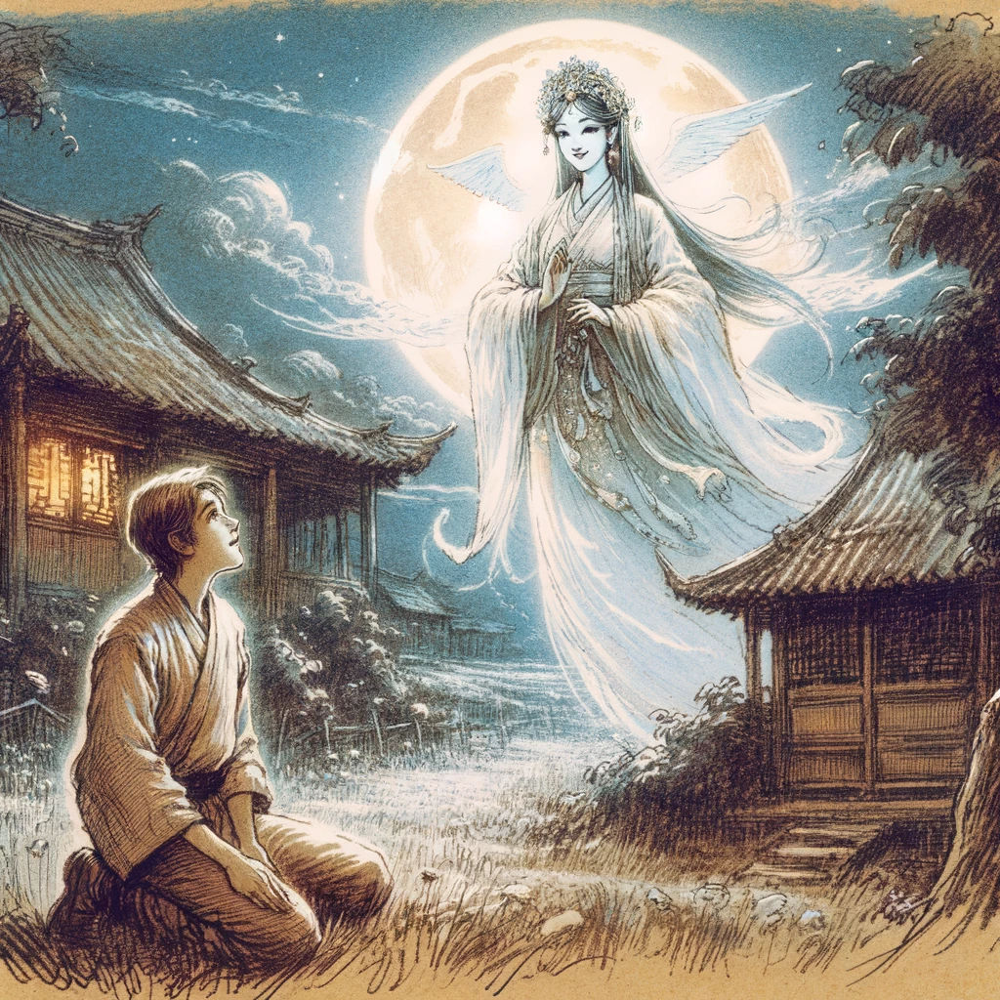

熊棋都市传说
在寂静的夜幕下，星星闪烁，羞涩的月亮被游荡的云朵遮住，一个农民沉睡在一个既神秘又令人迷醉的梦中。 渐渐地，薄雾散去，一群安详的大熊猫优雅地向他走来。 这些象征着和平与宁静的温顺生命，蕴含着一个不为人知的预言，一个来自远方的低语。
女神何仙姑仿佛直接从浓雾中现身，她的光芒划破了不夜的阴霾。 与她相遇，既是一种殊荣，也是一个神秘的谜。 农民被深深的敬畏之情所笼罩。

与时俱进者有福了
，女神的声音空灵和谐。
现在是象棋迈向新篇章的时刻--在尊重其丰富历史的同时实现现代化。这需要一个关键性的创新：第五个重要作品，这个时代黎明的关键
。
农民被这一启示所震撼，他迟疑着想要弄清真相，他的声音因敬畏和疑惑而颤抖。 他如此卑微，如此凡人，怎么可能被选中从事如此伟大的事业？
何仙姑带着仿佛照亮了几个世纪的微笑，轻轻地伸出了手。 在她的光芒中，一幕幕场景展现在眼前：一匹马，像兔子一样灵活优雅地奔跑着。
这一奇观超越了单纯的体能或速度。 它散发着迷人的柔韧性和令人着迷的适应性--这些特质对于在宏大的存在织锦中实现天衣无缝的相互作用至关重要。 它就像一个深邃的符号，从神秘的深处浮现出来，不仅象征着敏捷，还象征着在错综复杂的生活中以公平和凝聚力穿行的精湛技艺。
这些原则是一个社会的基石，在这个社会中，不同的声音团结一致，实现一个永恒的梦想：出现建立在相互尊重和集体洞察力基础上的公平、明智的领导。
醒来后，农民陷入了迷茫之中，黎明的第一缕曙光洒在他身上。 梦境挥之不去，既遥远又强烈地存在着，是笼罩在夜雾中的一个谜。 然而，从内心深处涌出一股强大的能量，催促着他采取行动。
在神圣的启示指引下，他以全新的决心开始了工作。 他的双手，在一种未知的力量引导下，塑造了何仙姑所揭示的棋子：马之力与兔之敏捷的完美融合。 这个棋子，是神圣梦想与人类智慧的结晶，将标志着象棋新纪元的开始，一个传统与创新在更新的游戏中相遇的时代，准备在未来世代俘获人们的心灵和思想。
这样，熊棋诞生了，不仅仅作为一种游戏，而是作为一种进化的象征，受到祖先智慧和那些敢于梦想者勇气的启发。